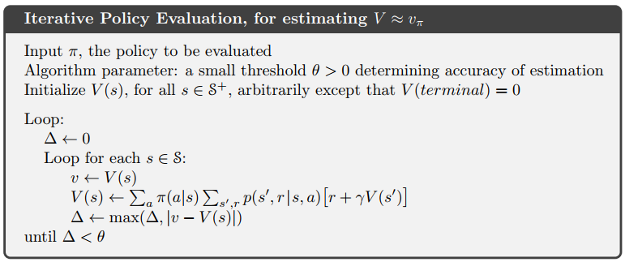
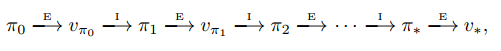
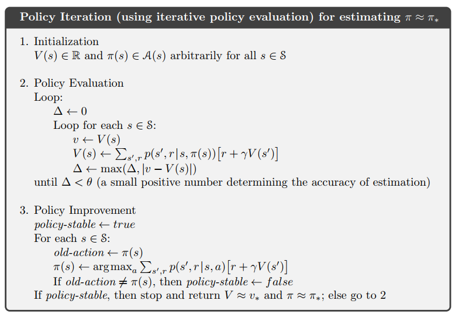
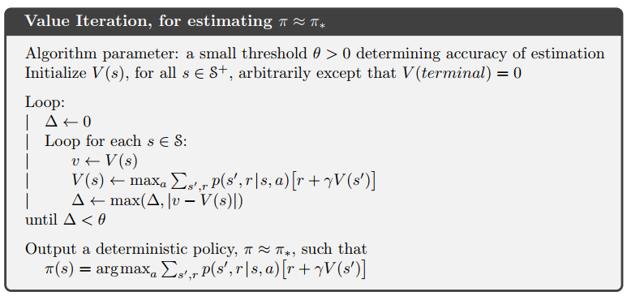

动态规划
什么是动态规划DP？
动态规划指的是根据环境的完美模型，依据马尔可夫决策过程计算最优化策略的算法集合。也就是说动态规划算法是基于模型（model-based）的一种方法。
强化学习中的DP
常规强化学习中的DP算法的关键思想是使用值函数来搜索好的策略。
策略评估
所谓的策略评估，就是对给定的任意策略计算其状态值函数$v_{\pi}$.策略评估也叫预测问题。根据$v_{\pi}$的公式我们有：
$$
\begin{align}
v_{\pi}(s)&=E_{\pi}[G_t|S_t=s] \cr
&=E_{\pi}[R_{t+1}+\gamma v_{\pi}(S_{t+1})|S_t=s] \cr
&=\sum_a \pi(a|s)\sum_{s’,r}p(s’,r|s,a)[r+\gamma v_{\pi}(s’)]
\end{align}
$$
其中$\pi(a|s)$是在状态s采取动作a的概率。期望的下标$\pi$指得是期望的计算是根据策略$\pi$。$v_{\pi}$存在和唯一的条件是只要$\gamma<1$或者所有的状态依据策略$\pi$都有终止态。
如果环境的动态转移特性完全可知，我们就能得到迭代策略评估方法:
$$
\begin{align}
v_{k+1}(s)&\doteq E_{\pi}[R_{t+1}+\gamma v_k(S_{t+1})|S_t=s] \cr
&=\sum_a \pi(a|s)\sum_{s’,r}p(s’,r|s,a)[r+\gamma v_k(s’)]
\end{align}
$$
等式里面的$v_{k+1}(s)$和$v_k(s)$代表是状态s在第k+1次迭代和第k次迭代的评估值。从等式可以看出v(s)的第k+1次评估值的计算使用的是下一个状态s’的第k次评估值，也就是说用旧的值更新新的值。
对于该迭代策略评估方法的计算机实现有两种。第一种是使用两个数组，一个保存新的迭代计算值另一个保存旧的值；第二种方法是使用一个数组，新计算出来的评估值直接替代旧的的评估值(in-place替代)，也就是上式右边计算使用的是新的迭代值$v_{k+1}(s’)$,这种方法不仅会收敛到$v_{\pi}$,而且收敛的速度会更快，因为计算产生的新的评估值会被立即使用。所以一般说到的DP算法都是使用的in-place替代。下面是in-place替代计算的伪代码：

注意该算法的结束方式是策略评估值的更新小于$\theta$。
策略提升
根据原始策略的值函数进行贪婪动作选择，以制定一个新的策略来提升旧的策略的过程叫做策略提升.
这种行为方式的价值就是：
$$
\begin{align}
q_{\pi}(s,a)&\doteq E[R_{t+1}+\gamma v_{\pi}(S_{t+1})|S_t=s,A_t=a] \cr
&=\sum_{s’,r}p(s’,r|s,a)[r+\gamma v_{\pi}(s’)]
\end{align}
$$
判断在状态s选择动作a是否是更好的策略的关键判断标准是$q_{\pi}(s,a)$是否大于$v_{\pi}(s)$,如果大于，那么该策略就是比原策略更优的，这就是策略提升理论。
也就是说，对于任何的状态$s\in S$,$\pi$和$\pi’$是任意的两个确定性策略(我们这里暂时只讨论确定性策略)，如果有
$$
q_{\pi}(s,\pi’(s))\geq v_{\pi}(s)\tag{1}
$$
那么策略$\pi’$肯定是比策略$\pi$更好或者相持平的策略，也就是说对所有的$s\in S$:
$$
v_{\pi’}(s)\geq v_{\pi}(s)\tag{2}
$$
下面我们证明从1式推导2式。
$$
\begin{align}
v_{\pi}&\leq q_{\pi}(s,\pi’(s))\cr
&=E[R_{t+1}+\gamma v_{\pi}(S_{t+1})|S_t=s,A_t=\pi’(s)]\cr
&=E_{\pi’}[R_{t+1}+\gamma v_{\pi}(S_{t+1})|S_t=s]\cr
&\leq E_{\pi’}[R_{t+1}+\gamma q_{\pi}(S_{t+1},\pi’(S_{t+1}))|S_t=s]\cr
&\vdots\cr
&\leq E_{\pi’}[R_{t+1}+\gamma R_{t+2}+\gamma^2 R_{t+3}+\gamma^3 R_{t+4}+\cdots|S_t=s]\cr
&=v_{\pi’}(s)
\end{align}
$$
什么时候策略提升找到最优策略呢？我们假设一个新的策略$\pi’$和旧的策略$\pi$一样好而没有更好，对于所有$s\in S$:
$$
\begin{align}
v_{\pi’}(s)&=\max_a E[R_{t+1}+\gamma v_{\pi’}(S_{t+1})|S_t=s,A_t=a]\cr
&=\max_a \sum_{s’,r}p(s’,r|s,a)[r+\gamma v_{\pi’}(s’)]
\end{align}
$$
可以发现该等式和贝尔曼最优方程一样，因此$v_{\pi’}$一定就是$v_*$,$\pi$和$\pi’$一定就是最优策略。也就是说策略提升一定会提供一个更好的策略，除非原始策略已经是最优策略。
策略迭代

上图中，$\stackrel{E}{\longrightarrow}$代表策略评估，$\stackrel{I}{\longrightarrow}$代表策略提升。这种策略评估和策略提升的不断迭代直到找到最优策略的方法叫做策略迭代。下面是策略迭代的伪代码：

可以看到先策略评估然后策略迭代，不断循环直到找到最优策略。
值迭代
策略迭代存在一个缺陷：每次迭代都要进行策略评估，而策略评估需要大量的迭代计算。相对应的，我们将策略评估仅仅更新状态值一次的算法称为值迭代。这里我们可以给出策略评估和策略提升相结合的更新操作,对于所有的$s\in S$：
$$
\begin{align}
v_{k+1}(s)&\doteq \max_a E[R_{t+1}+\gamma v_{k}(S_{t+1})|S_t=s,A_t=a] \cr
&=\max_a \sum_{s’,r}p(s’,r|s,a)[r+\gamma v_k(s’)]
\end{align}
$$
该等式还可以参考贝尔曼最优等式进行理解。值迭代和策略迭代的不同点在于值迭代对状态s的所有动作取价值最大的那个，而且只用进行一次即可，而策略迭代需要先进行策略评估，策略评估就需要迭代很多次，然后再进行策略提升。下面给出值迭代的伪代码：

值迭代的终止条件是在一次更新中更新的值小于某个阈值$\theta$。值迭代的收敛速度一般要比策略迭代快，因为它没有策略迭代的策略评估迭代那么多次，而且将策略评估和策略迭代结合在了一次操作中（使用max操作），大大减少了运算迭代次数。